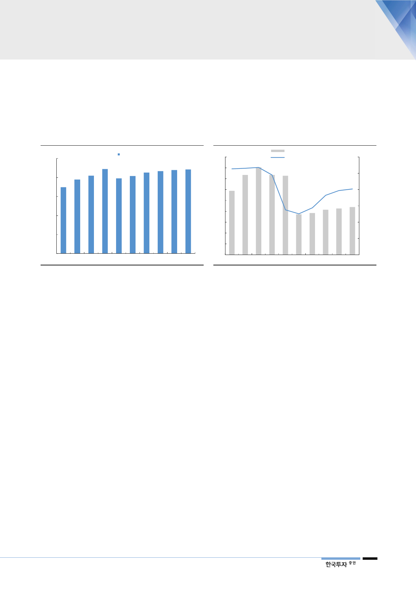

유가 상승도
요금기저 증가 요인
또한 유가 상승에 따라 운전자금이 늘어날 것이다. 가스공사는 도매사업을 위해
천연가스 재고 확보가 필요한데, 천연가스 가치가 유가에 연동돼 등락하기 때문
이다. 13년 8.0조원에 달하던 운전자금은 유가 하락으로 16년 3.5조원까지 감소
했다. 하지만 16년을 바닥으로, 운전자금은 유가 상승에 힘입어 늘어나고 있다.
[그림 11] 요금기저 2021년까지 증가세 지속
(조원)
요금기저
25
19.4 20.5 22.2 19.8 20.4 21.3 21.6 22.0 22.1
20 17.5
15
10
5
0
2012
2014
자료: 한국가스공사, 한국투자증권
2016
2018
2020F
[그림 12] 유가 상승으로 운전자금도 커질 것
(조원)
운전자금(좌)
9
8.0
WTI(원화환산, 우)
8
7.4
7.3 7.3
7
5.9
6
(천원/배럴)
120
100
80
5
4
3.7 3.8 4.1 4.3 4.4 60
3
40
2
20
1
0
0
2011
2013
2015
2017
2019F
자료: 한국가스공사, 한국투자증권
금리 인상
베타 상승
자기자본비율 개선으로
WACC 상승
요금기저 증가와 더불어 투자보수율도 상승한다. 첫째, 금리인상이 시작됐기 때문
이다. 가스공사의 투자보수율 산정에 적용된 무위험수익률(국고채 5년물 금리)은
12년 3.9%에서 작년 1.5%로 하락했으나, 올해를 시작(2.0%)으로 향후 몇 년간
상승세가 지속될 가능성이 높다. 둘째, COE 산정에 사용되는 beta(가스공사와
코스피 지수의 과거 5년 일평균 beta를 적용)가 높아질 가능성이 크기 때문이다.
12년부터 17년까지 매년 실제 연간 beta가 높아졌다는 점에서 2020년까지
COE은 우상향이 기대된다[그림 14]. 셋째, 순이익 증가가 자기자본비율 개선으
로 이어져 WACC 상승이 가능하다.
올해 보장이익 15% 증가
2021년까지 증가세 계속
올해 요금기저(규제사업 총 투자자산)는 21조 2,974억원, 투자보수율(WACC)
은 4.22%이며 보장이익(세후)은 전년대비 14.8% 증가한 8,981억원으로 산정
되었다. 내년에는 세후 투자보수율이 올해 대비 0.15%p 상승할 것으로 예상되며
요금기저도 3,574억원 늘어날 것으로 추정된다. 이에 내년 보장이익은 9,457억
원(+5.3% YoY)로 예상된다. 내년 이후에도 요금기저 증가, 투자보수율 상승 추
세는 2021년까지 계속될 전망이다.
9